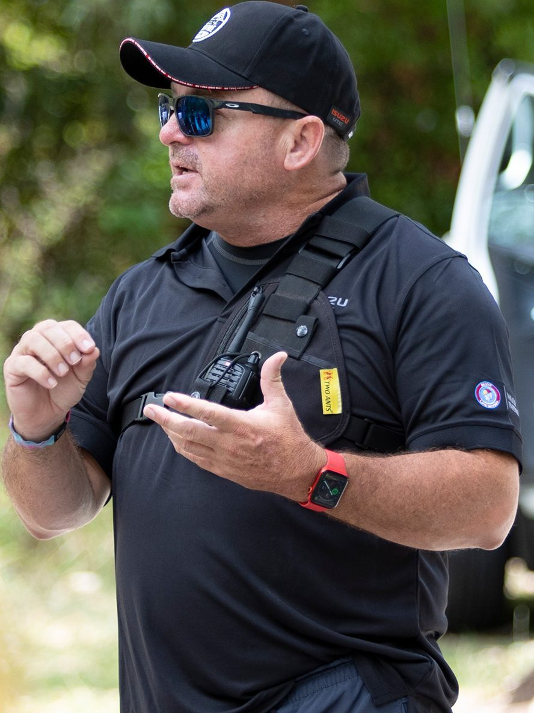
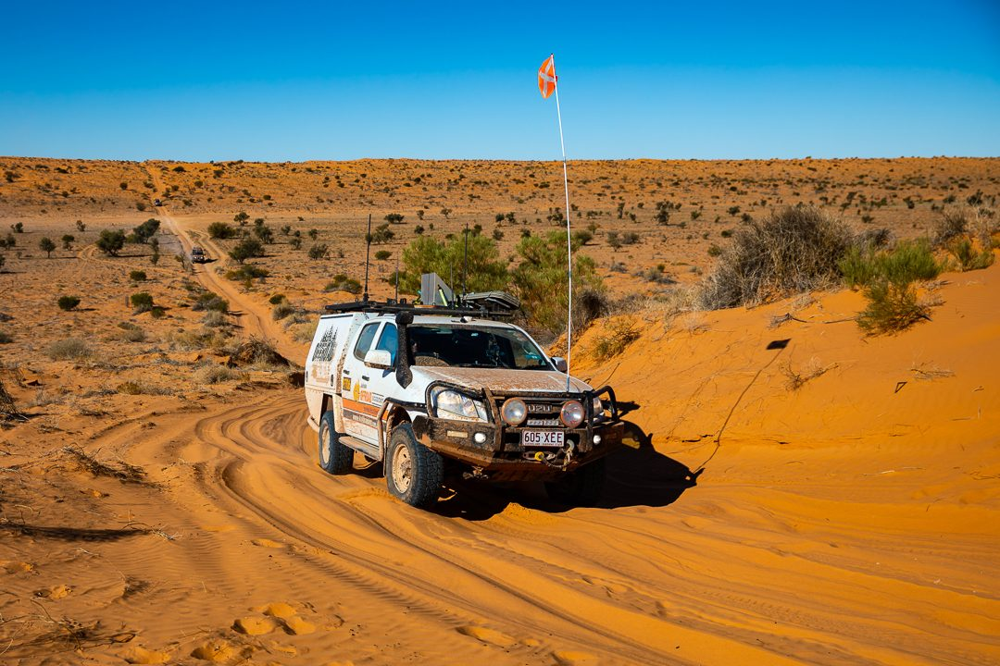
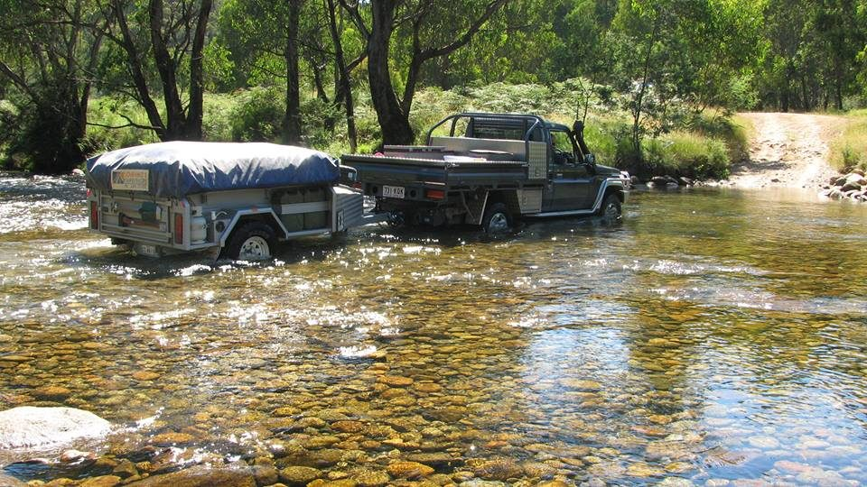
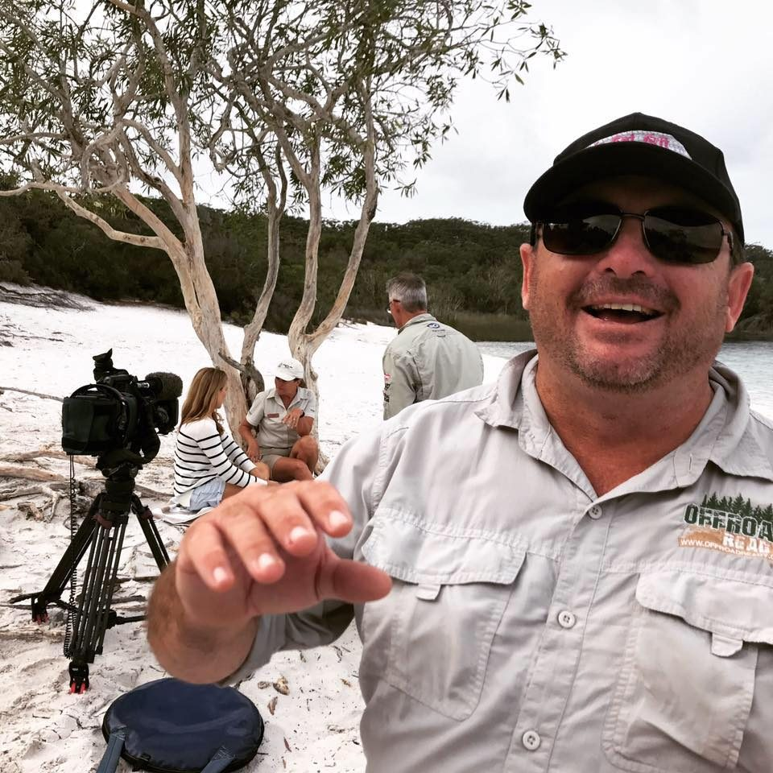
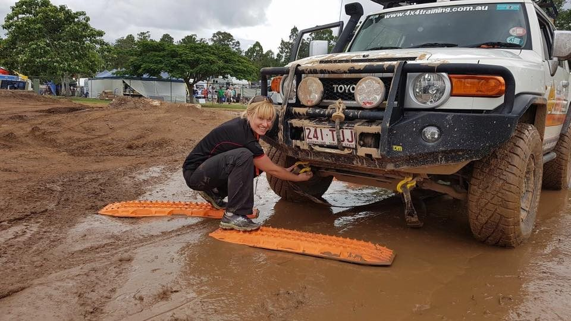
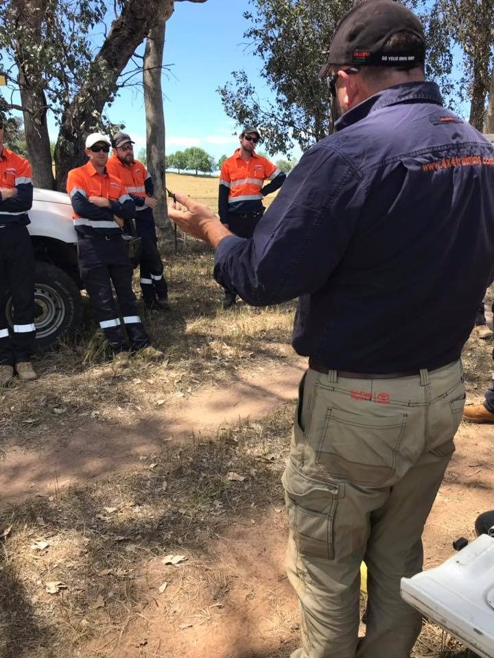

Teaching
You don’t have to conquer it
Dingo Dave teaches four-wheel driving as outdoor education. The trip is the point. The skill is what makes the trip possible. The country is not something you are supposed to beat.

The lesson
That line runs through the academy and through his own writing. The mission is skills enough that the driver and the vehicle can handle the terrain they actually chose — safely, securely, and with real joy. Adult education sits at the centre: engaging, interesting, entertaining, and safe, whether the day is a course or a tour.
He describes himself as a qualified outdoor and environmental education teacher, and he has spent that career on real tracks. Owning a four-wheel drive is not the same as knowing how to use one. The low-range day exists to close that gap. Big adventures, as he still says it, start with the right skills.
Safely, securely and with real joy. The academy’s own test of a day that worked.
Respect the country
Low impact is not a line added at the end of a day. It is how the vehicle is driven. Stay in the track that is already there. Don’t widen it for a photograph. Don’t cut a corner because the ruts look deep. On sand, a chopped-up beach at the end of the holidays is what happens when every driver picks a new line. One wheel track, used again, marks the place less than a fresh scar beside it.

The camp is the same rule. A fire only where a fire is allowed, and in a place that already takes one. Rubbish that leaves with you. A creek you walk before you drive, and that you leave alone when the bank will not survive the climb out. Sustainable, in this teaching, is not a softer trip. It is the trip the country can still offer next season. On K’gari that includes a World Heritage coast, and the dingoes, as country you do not get to damage.
Access is the part that disappears quietly. Beaches, tracks and camps stay open while the people who manage them still trust the next convoy. A wrecked dune, a toilet in the bush, a vehicle through a closure: that is how a gate goes up. The habit has to travel further than the drivers who already have it. A family who heard it said plainly, a passenger who was not mocked for asking, a notebook that does not treat the country as something to beat. People who come back are the ones who look after the place. People who were never taught will not. Spreading that message is part of keeping the gate open.
Read the country
The practical version is simple, and it is stricter than a tip sheet. You read the track before you drive it. You set the vehicle up for that surface. You climb and descend properly. A water crossing includes knowing when not to attempt it. Recovery is for the bog you are actually likely to meet. Minimum-impact driving sits on that same list, for the reason just given.

Sand is the same idea on a different surface. In Dingo’s Diary he refuses a single magic tyre pressure. Rain-hardened sand and a chopped-up K’gari beach at the end of the holidays are not the same number. The tide comes before the beach. Once the tyres are down, the driving has to change: slower, no hard braking, no sharp turns, or a bead comes off the rim. The lesson is not “let them down.” It is that the sand you have today decides the rest.

Planning gets the same treatment. Do not bite off a day’s distance that pushes you into the night, among animals, short of fuel. Carry the extra fuel. Carry two spares and a plug kit. Half a holiday in a remote town waiting for a tyre to be flown in is not the fun.
You don’t have to conquer an environment to enjoy it. You do not have to cross the Simpson to have been in the desert.
He said the first of those sentences in 2026, in a conversation with Jamie Hazelden and Rick O’Brien. Conquest is the habit he is pushing back on. Fifteen dunes in can be the whole experience. The Cape is not a trophy you fail by not finishing.
Confidence is taught
Fear is the thing to take out, not the thing to mock. On K’gari he has described the job as taking the fear out of beach driving while still treating a World Heritage coast, dingoes included, as country you do not get to damage.
He is careful about whose confidence is in the car. The driver’s confidence does not transfer to a partner, a mate, or a child. Start them on something they can finish. A shower, a decent chair and a fire are not softness. They are why people come back, and people who come back are the ones who will look after the place. Getting children outside is, in his diary, part of keeping the country open.
The same idea shows up in the women-only days. A lot of the people he wants in the driver’s seat have been permanent passengers, or they would rather learn from someone who is not their partner. Girls Got Grit, built with Tourism Queensland, was a structured weekend: learn the vehicle, drive the island or the country, get dirty, and still enjoy the place. His test of a good day is that the ego and the self-doubt both drop, no question is silly, and the trainer is there for the skill — not to lead a convoy that happens to have a swag on the roof.
The unglamorous work
He is impatient with the catalogue. “Off-road”, “extreme” and “tactical” are marketing words. A long drawbar does not make a trailer more capable. Packing the house into the camper does not make the trip better. Comfortable chairs and a warm bag, yes. An extra of everything, no. The further you actually want to go, the more compact the trailer needs to be.
The must-dos he writes down are the dull ones: rustproofing, a proper cargo barrier, tyres that match the load, and reading the insurance wording to see whether “off-road” is actually covered. Before a remote trip he wants a shakedown close to home, so a bolt that walks out does it on a weekend, not on day nine.
Remote is a state of mind, not a place.
That is from his 2022 note on remote camping. Distance from the nearest people, not a badge for how far you drove. You do not need to be in the middle of the desert to feel a long way from the crowd. A plan is a starting set of ideas. A torn sidewall, or a better camp mentioned at a roadhouse, should be allowed to change it. Someone at home still needs to know when you were meant to call. A personal locator beacon is the simple version of that promise. Lithium, purple lights and a complicated camp are optional. A torch and a burner that you have already tested are not.
Recovery is taught by doing it. At Rainbow Beach in 2025 he had a crew bog a vehicle on purpose. A practised recovery is the point. A surprise one is how people get hurt. Winch, dampener, recovery points, convoy radio, the check before you start. Theory, then the sand.

What a teacher is for
Share the mistake you have already made, so the next driver does not have to make it in the same creek. Say it plainly enough that a family can use it: in a diary, on the Offroad Adventure Show, or on a show lawn talking about how to prepare for the outback. Then get them home.

The trainers around him are described the same way he teaches: experienced, nationally accredited, approachable in a group or one to one. The four-wheel drive, in the academy’s own words, is how families get to the trip.
The mark
The directory uses two stamps, and they are not the same name. Dingo Dave Approved. Dingo Dave Recommends. Under them sit the places a trip actually uses: campgrounds and free camps, hotels, motels and bed and breakfasts, caravan parks, national parks, state forests. The film is the stamp coming down. The patch is the same name, sewn — a vehicle, a winch, a fire, the tools.

The site states the work in three lines: educate, share the trips, and celebrate the ones other people bring back. Fieldstay still scores a stay from a road trip. This stamp is his, and it is a different mark.
Notes
Drawn from his published writing and from the academy’s own account of how a day is taught. Not a transcript of a private conversation, and not a course outline.
- Australian Offroad Academy, About
- Offroad Ready courses
- Dave Darmody, “Are you ready for a remote camping trip?”, RV Daily, 21 December 2022
- Dave Darmody, “Do you really need to pack that?”, RV Daily
- Dave Darmody, “What goes on in female-only 4WD sessions?”, Unsealed 4X4, 17 April 2023
- Dave Darmody, “Must-do’s for your 4WD”, Unsealed 4X4, 13 February 2023
- You Don’t Have to Conquer It, with Dave Darmody, Jamie Hazelden and Rick O’Brien, 16 August 2026
- Burnett Mary Regional Group, Rainbow Beach training led by Dave Darmody, 1 May 2025
- Dingo Dave, directory